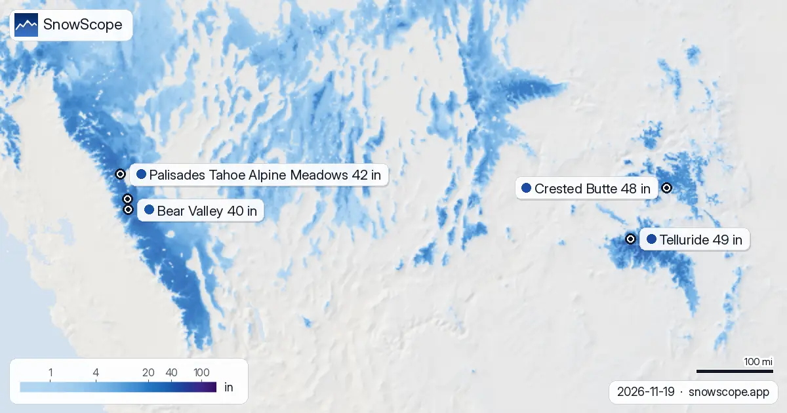

Telluride Colorado snow report: the snow depth ranking in the US West (19 November)
Telluride Colorado snow report – 49 in (125 cm): that is the snow on the upper slopes of Telluride today. If you want the most snow in the US West today, look at Telluride: about 49 in (125 cm) up high. After it come Crested Butte (48 in (122 cm)) and Palisades Tahoe Alpine Meadows (42 in (107 cm)). Across the region, 173 of 193 resorts in the US West have snow up high today, and our model finds 302,098 sq mi (782,430 km²) of white ground. In the field we always carry a probe; numbers like these tell you where to go, the probe tells you what is under your skis.
See the live snow forecast for Telluride in the SnowScope appSnow depth, powder alerts and the 3D map, free.
Snow on the slopes today
The snow has spread since 17 November, from 203,248 sq mi (526,410 km²) to 302,098 sq mi (782,430 km²) today; for 22 November our forecast gives 337,426 sq mi (873,930 km²).
From the base to the top of Telluride: 3 in (8 cm) at the base (8,734 ft / 2,662 m), 16 in (40 cm) at mid-mountain (10,620 ft / 3,237 m) and 46 in (116 cm) at the top (12,507 ft / 3,812 m).
| Resort | Snow depth | New snow, 72 h | Coming, next days | Top |
|---|---|---|---|---|
| Telluride | 49 in (125 cm) | 4 in (10 cm) | 5 in (13 cm) | 12,507 ft (3,812 m) |
| Crested Butte | 48 in (122 cm) | 2 in (5 cm) | 4 in (10 cm) | 11,444 ft (3,488 m) |
| Palisades Tahoe Alpine Meadows | 42 in (107 cm) | 26 in (66 cm) | 10 in (26 cm) | 8,494 ft (2,589 m) |
| Bear Valley | 40 in (102 cm) | 26 in (67 cm) | 8 in (20 cm) | 8,484 ft (2,586 m) |
| Kirkwood | 40 in (102 cm) | 28 in (71 cm) | 8 in (20 cm) | 9,462 ft (2,884 m) |

Against past winters
At about 10,620 ft (3,237 m), Telluride has 22 in (56 cm) today; a normal 19 November has 12 in (30 cm) there.
That is more than in 30 of the 46 past winters on this date.
In past winters the best snow at Telluride usually came early January / early March.
An early lead like this matters most for the lower and middle runs, which usually wait until December for this much snow.
Day by day at Telluride: Friday 20 November 2 in (4 cm); Saturday 21 November 4 in (9 cm).
Height by height at Telluride: 8,734 ft (2,662 m) 3 in (8 cm) on the ground, 5 in (12 cm) more in the next 7 days; 10,620 ft (3,237 m) 16 in (40 cm) on the ground, 5 in (13 cm) more in the next 7 days; 12,507 ft (3,812 m) 46 in (116 cm) on the ground, 7 in (17 cm) more in the next 7 days.
The days ahead
Between now and 22 November we expect 10 in (26 cm) at Palisades Tahoe Alpine Meadows, 8 in (20 cm) at Bear Valley and 8 in (20 cm) at Kirkwood.
Expect two seasons in one resort at Telluride on 19 November: a freezing level of 8,071 ft (2,460 m) to 10,860 ft (3,310 m) means wet snow below and wintry snow above.
Forecasts a few days ahead can change: look at the map again the day before you travel.
What the stations saw
At the Wolf Creek Summit station (10,928 ft / 3,331 m), the gauge showed 33 in (84 cm) of snow on the ground on 17 November, 5 in (13 cm) of it new in 24 hours. On 17 November, the Red Mountain Pass station (11,060 ft / 3,371 m) measured 32 in (81 cm) on the ground, including 5 in (13 cm) of new snow in 24 hours. At the Midway Valley station (9,829 ft / 2,996 m), the gauge showed 31 in (79 cm) of snow on the ground on 17 November, 8 in (20 cm) of it new in 24 hours.
A word on the numbers: resort values are our model's estimate for the upper slopes, while each station measures a single spot on the date given.
How this start compares
At Telluride the snow is about where it should be: 22 in (56 cm) at 10,620 ft (3,237 m), deeper than in 30 of the past 46 winters (usual: 12 in (30 cm)).
A slow start at Crested Butte: at 10,285 ft (3,135 m) our model shows just 4 in (11 cm), below the usual 12 in (31 cm); on 19 November, only 12 of the past 46 winters had less.
Palisades Tahoe Alpine Meadows is off to a good start. At 7,359 ft (2,243 m) our model has 31 in (79 cm) today, more than on this date in 46 of the past 46 winters; the usual is 4 in (9 cm).
Tips for skiers
- Snow on the map does not mean a resort is open: check lifts and opening dates on the resort's website.
- Early-season snow is thin. Stay on open, groomed pistes: rocks and grass can hide just under the surface.
- Ski the shady side: high, north-facing slopes hold their snow, while slopes facing south go bare first.
- Before you ski off-piste or go touring, read the official avalanche bulletin (links below).
- Get a powder alert in the SnowScope app to know when Telluride gets fresh snow.
About these numbers
Resort snow depths are the deepest snow on the resort's upper slopes from the SnowScope snow model (about 1 km, run of 18 November); they are estimates for an area, not a measurement at one point. Station values are measurements on the date shown. Forecasts can change. Always read the official avalanche bulletin before going off-piste.
Official avalanche bulletins: Colorado Avalanche Information Center · avalanche.org (US national portal)
Cite this report
For research, teaching or the press: the numbers and charts are free to reuse under CC BY 4.0 with this citation.
SnowScope (2026), Telluride Colorado snow report: the snow depth ranking in the US West (19 November), https://snowscope.app/blog/en/2026/11/us-west-telluride-snow-depth-today-19-november-2026.html, accessed 2026-11-19
SnowScope (Atlas Labs). (2026, November 19). Telluride Colorado snow report: the snow depth ranking in the US West (19 November). SnowScope snow reports. https://snowscope.app/blog/en/2026/11/us-west-telluride-snow-depth-today-19-november-2026.html
BibTeX
@misc{snowscope2026uswesttelluridesnowdepth,
author = {{SnowScope (Atlas Labs)}},
title = {Telluride Colorado snow report: the snow depth ranking in the US West (19 November)},
year = {2026},
month = nov,
howpublished = {\url{https://snowscope.app/blog/en/2026/11/us-west-telluride-snow-depth-today-19-november-2026.html}},
note = {Published 2026-11-19 14:03 UTC; accessed 2026-11-19}
}· CC BY 4.0 · Methods, data and tools →
Telluride: snow and temperature by height, this winter vs last (tools) →
Follow Telluride
Free: a message when fresh snow is coming, and the forecast every morning.
More snow reports

Telluride holds 115 cm (45 in) on 8 November. The freezing level climbs to 4,280 m (14,042 ft) on 9 November, bringing rain-on-snow risk to the highest slopes.

Park City, Utah snowfall forecast for 13 November 2026: almost no snow on the ground right now, about 5 in near the summit from the weekend storm with a snow level of 7,400 to 7,700 ft, rain at the base, and about 12 in up top over the week.

Deer Valley ski conditions on 13 November 2026: no real snow on the ground yet, about 4 in near the top from the weekend storm, rain on the low East Village side below about 6,700 to 7,600 ft, and 11 in up top over the week.